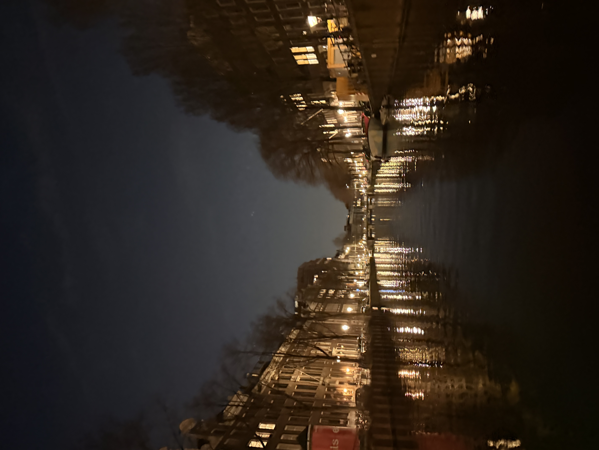

Indie has travled to over 20 countries in her life. Her Favorite was Amsterdam in the Netherlands! She plans to travel to many more and take many more pictures.

This specific photo was taken on a boat ride thorugh the canels of Amsterdam.. It is my favoite becuase it is an amzing representation of the beuty that the city holds.
Built by Indie Brakken · BMIS 235